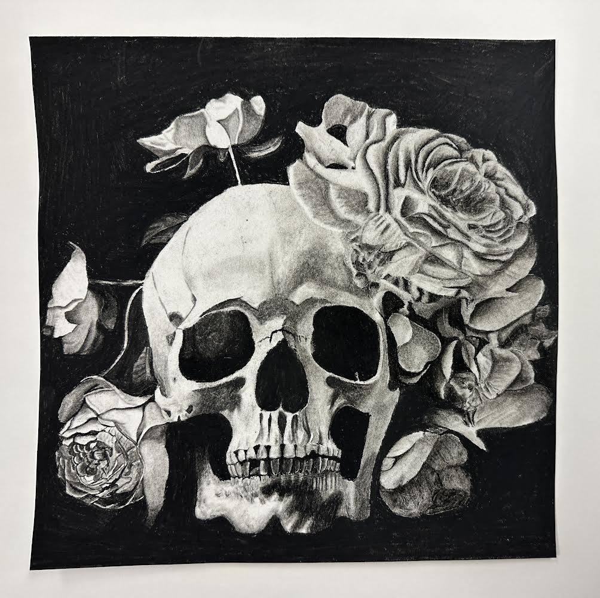
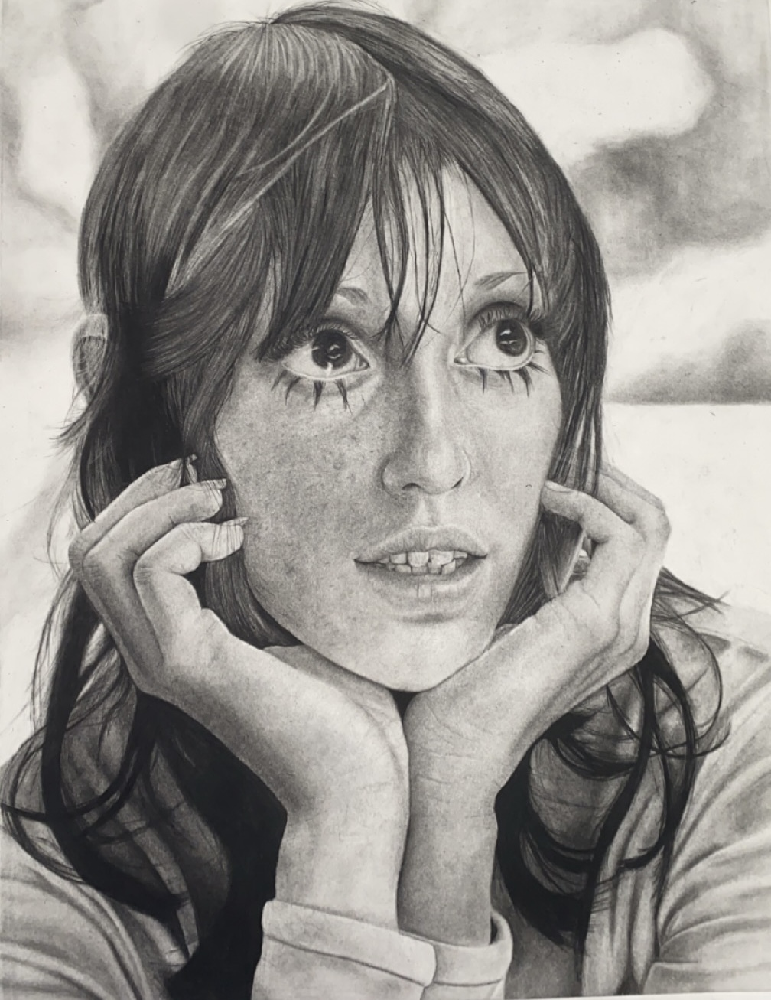
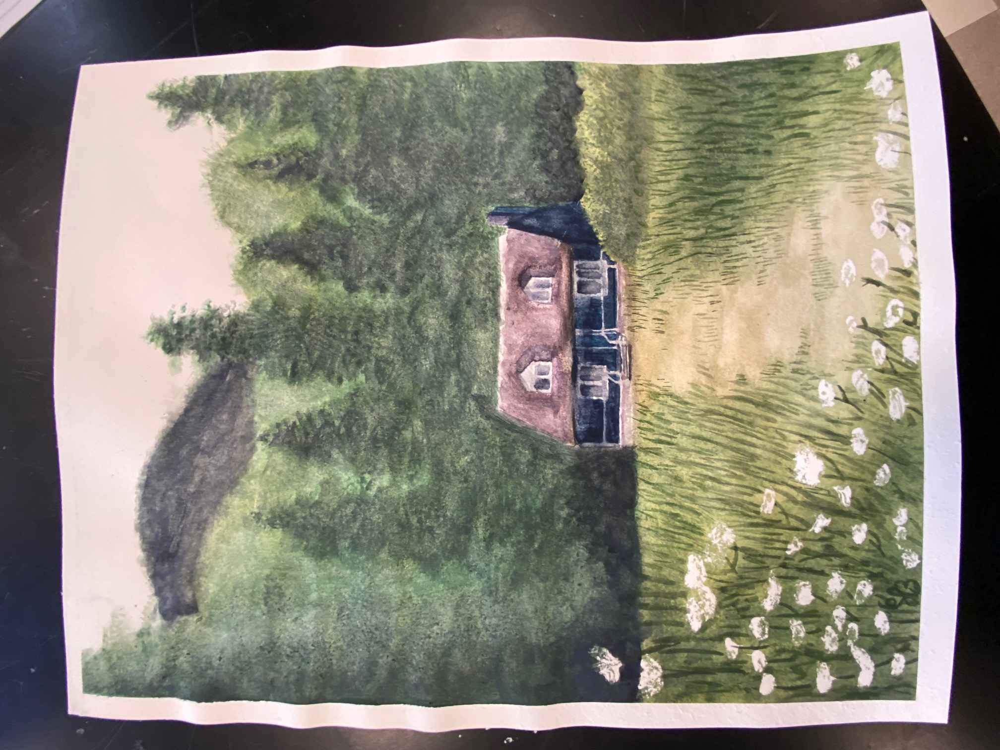

Art has always been something I've wanted to do. I truly started drawing on my own at around the age of six, and never looked back. The subjects and style of my art has definitely changed over the years, from starting with a cartoon style, to creating my own characters, to most recently, realism. I have always been interested in other people's art, so naturally i'd take inspiration from a few. One artist That I believe has definitely impacted my realism art style is Caravaggio. His use of contrast and light is truly beutiful, Which is why I switched from graphite portraits to charcoal portraits. Graphite is very gray, you can only really get the values of dark grey, to white. This is personally not my favorite look, which is why I switched to charcoal. Charcoal makes contrast easy. You can get anywhere from jet black, to stark white, and every value in between. This completely changed my art, and made me feel excited to draw again.
I've made a handful of serious projects that I'd like to show now. I'll start with my most successful and personal favorite peice, "Skull and Flowers." This peice was the first ever artwork that I recieved an official award for. I made this in the beginning of my sophmore year in highschool, where my art teacher took a liking to it. She then recieved word of a large art show for many of the highschools in my area. This is where I recieved my "Outstanding Artist" award for the artwork. I did not revieve the first place prize unfortunately, but was one of the few who still got an award for their piece.
The artwork that I started working on after Skull and Flowers was this artwork of an actress named Shelly Duvall. This is the greatest portrait I have ever made in my opinion. I worked on this peice for, I belive, A total of nine months. Near the end of my time with the project, Shelly Duvall unfortunately passed away. So now I'd like to present this piece as a tribute to her and her time as an actress. This photo of the artwork was taken a couple days before it was finished, but I will update it when it is fully done.
This work was my first watercolor painting that I made and was proud of, I was never really the best at painting, but this peice was for an assignment in my 2d art class during my sophmore year of highschool, so I had to do it anyway. I was unsure if it would turn out well in the beginning, but I ended up liking how it looked after I finished. There was really no meaning to this piece, it was just for a small assignment so I didn't put much thought into it. I just found a photo that I thought was pretty and painted it. This ended up being shown in my section in the art show at my old school, next to my other works.
